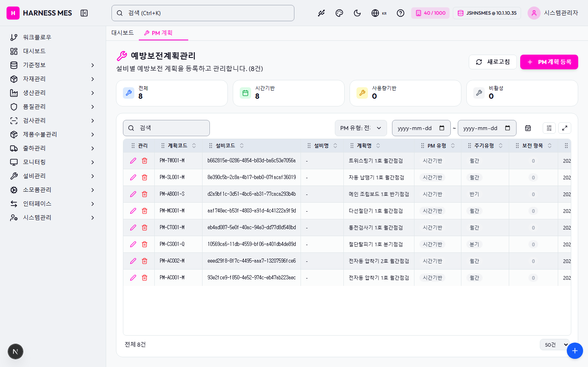

Route: /equipment/pm-plan
Status: PASS / HTTP 200
| 기능/버튼 | 처리 방식 | 상태 | 비고 |
|---|---|---|---|
| 화면 로드 | GET /equipment/pm-plan | 실행 | HTTP 200 |
| 라우트 prewarm | 직접 HTTP 확인 | 실행 | HTTP 200, 193ms |
| 초기 API 호출 | 브라우저 네트워크 수집 | 실행 | 10건 |
| 🇰🇷 | 화면 버튼 목록화 | 목록화 | 후속 메뉴별 세부 시나리오 실행 대상 |
| 시스템관리자 | 화면 버튼 목록화 | 목록화 | 후속 메뉴별 세부 시나리오 실행 대상 |
| 워크플로우 | 화면 버튼 목록화 | 목록화 | 후속 메뉴별 세부 시나리오 실행 대상 |
| 대시보드 | 화면 버튼 목록화 | 목록화 | 후속 메뉴별 세부 시나리오 실행 대상 |
| 기준정보 | 화면 버튼 목록화 | 목록화 | 후속 메뉴별 세부 시나리오 실행 대상 |
| 자재관리 | 화면 버튼 목록화 | 목록화 | 후속 메뉴별 세부 시나리오 실행 대상 |
| 생산관리 | 화면 버튼 목록화 | 목록화 | 후속 메뉴별 세부 시나리오 실행 대상 |
| 품질관리 | 화면 버튼 목록화 | 목록화 | 후속 메뉴별 세부 시나리오 실행 대상 |
| 검사관리 | 화면 버튼 목록화 | 목록화 | 후속 메뉴별 세부 시나리오 실행 대상 |
| 제품수불관리 | 화면 버튼 목록화 | 목록화 | 후속 메뉴별 세부 시나리오 실행 대상 |
| 출하관리 | 화면 버튼 목록화 | 목록화 | 후속 메뉴별 세부 시나리오 실행 대상 |
| 모니터링 | 화면 버튼 목록화 | 목록화 | 후속 메뉴별 세부 시나리오 실행 대상 |
| 설비관리 | 화면 버튼 목록화 | 목록화 | 후속 메뉴별 세부 시나리오 실행 대상 |
| 소모품관리 | 화면 버튼 목록화 | 목록화 | 후속 메뉴별 세부 시나리오 실행 대상 |
| 인터페이스 | 화면 버튼 목록화 | 목록화 | 후속 메뉴별 세부 시나리오 실행 대상 |
| 시스템관리 | 화면 버튼 목록화 | 목록화 | 후속 메뉴별 세부 시나리오 실행 대상 |
| PM 계획 | 화면 버튼 목록화 | 목록화 | 후속 메뉴별 세부 시나리오 실행 대상 |
| 새로고침 | 화면 버튼 목록화 | 목록화 | 후속 메뉴별 세부 시나리오 실행 대상 |
| PM 계획 등록 | 화면 버튼 목록화 | 목록화 | 후속 메뉴별 세부 시나리오 실행 대상 |
| 전체화면 보기 | 화면 버튼 목록화 | 목록화 | 후속 메뉴별 세부 시나리오 실행 대상 |
| AI 채팅 | 화면 버튼 목록화 | 목록화 | 후속 메뉴별 세부 시나리오 실행 대상 |
| 개선요청 등록 | 화면 버튼 목록화 | 목록화 | 후속 메뉴별 세부 시나리오 실행 대상 |
| 입력 필드 | DOM 수집 | 목록화 | 4개 |
| 선택 필드 | DOM 수집 | 목록화 | 2개 |
| 목록/그리드 | DOM 수집 | 목록화 | table 1, grid 0 |
| Method | URL | Status | OK |
|---|---|---|---|
| GET | /api/health | 200 | OK |
| GET | /api/db-info | 200 | OK |
| GET | /api/health | 200 | OK |
| GET | /api/db-info | 200 | OK |
| GET | /api/system/comm-configs?commType=SERIAL&useYn=Y | 200 | OK |
| GET | /api/system/configs/active | 200 | OK |
| GET | /api/auth/me | 200 | OK |
| GET | /api/menu-categories/tree | 200 | OK |
| GET | /api/equipment/pm-plans?limit=5000 | 200 | OK |
| GET | /api/master/com-codes/all-active | 200 | OK |
requestfailed: GET /api/db-info net::ERR_ABORTED requestfailed: GET https://fonts.gstatic.com/s/outfit/v15/QGYvz_MVcBeNP4NJtEtq.woff2 net::ERR_ABORTED

H HARNESS MES 🇰🇷 40 / 1000 JSHNSMES @ 10.1.10.35 시스템관리자 워크플로우 대시보드 기준정보 자재관리 생산관리 품질관리 검사관리 제품수불관리 출하관리 모니터링 설비관리 소모품관리 인터페이스 시스템관리 대시보드 PM 계획 예방보전계획관리 설비별 예방보전 계획을 등록하고 관리합니다. (8건) 새로고침 PM 계획 등록 전체 8 시간기반 8 사용량기반 0 비활성 0 PM 유형: 전체 PM 유형: 시간기반 PM 유형: 사용량기반 ~ 관리 계획코드 설비코드 설비명 계획명 PM 유형 주기유형 보전 항목 다음예정일 상태 PM-TW001-M b662815e-0286-4854-b83d-ba6c53e7056a - 트위스팅기 1호 월간점검 시간기반 월간 0 2026. 2. 22. PM-SL001-M 8e390c5b-2c8a-4b17-beb0-07facaf36019 - 자동 납땜기 1호 월간점검 시간기반 월간 0 2026. 2. 12. PM-AB001-S d2a9bf1c-3d51-4bc6-ab31-77caca293b4b - 메인 조립보드 1호 반기점검 시간기반 반기 0 2026. 2. 28. PM-MC001-M aaf748ec-b53f-4803-a91d-4c41222a9f9d - 다선절단기 1호 월간점검 시간기반 월간 0 2026. 2. 25. PM-CT001-M eb4ad087-5e0f-40ac-94e3-dd77d8d548bd - 통전검사기 1호 월간점검 시간기반 월간 0 2026. 2. 10. PM-CS001-Q 10569ca6-11db-4559-bf06-a401db4de89d - 절단탈피기 1호 분기점검 시간기반 분기 0 2026. 2. 20. PM-AC002-M eeed29f8-8f7c-4495-aaa7-13207596fce6 - 전자동 압착기 2호 월간점검 시간기반 월간 0 2026. 2. 18. PM-AC001-M 93e2fce9-f850-4e52-974c-eb47ab223aec - 전자동 압착기 1호 월간점검 시간기반 월간 0 2026. 2. 15. 전체 8건 20건 50건 100건 200건 500건 전체화면 보기 AI 채팅 개선요청 등록